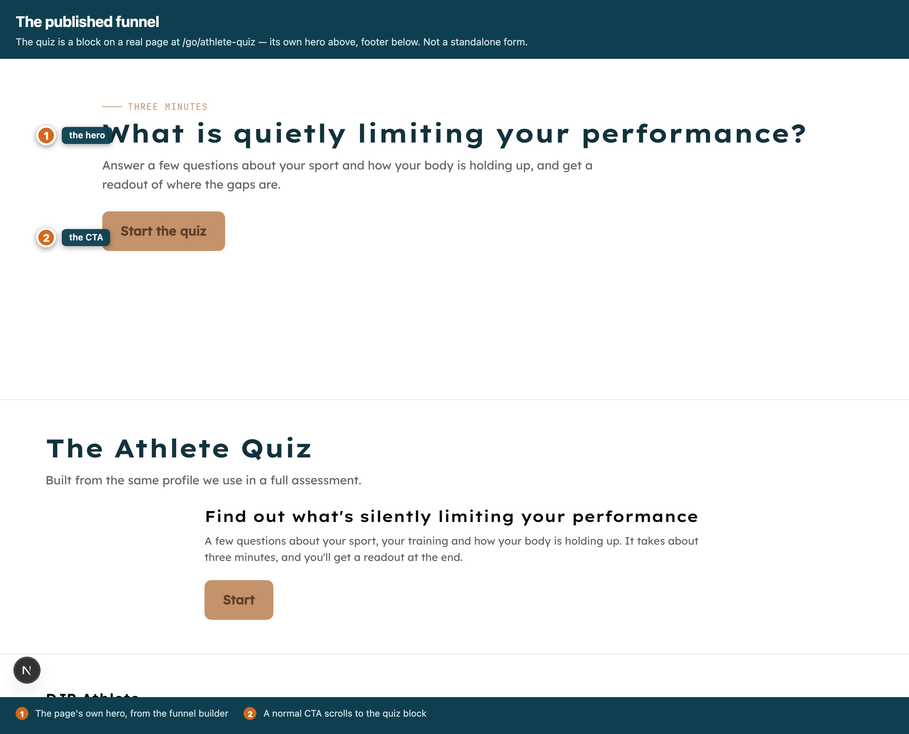
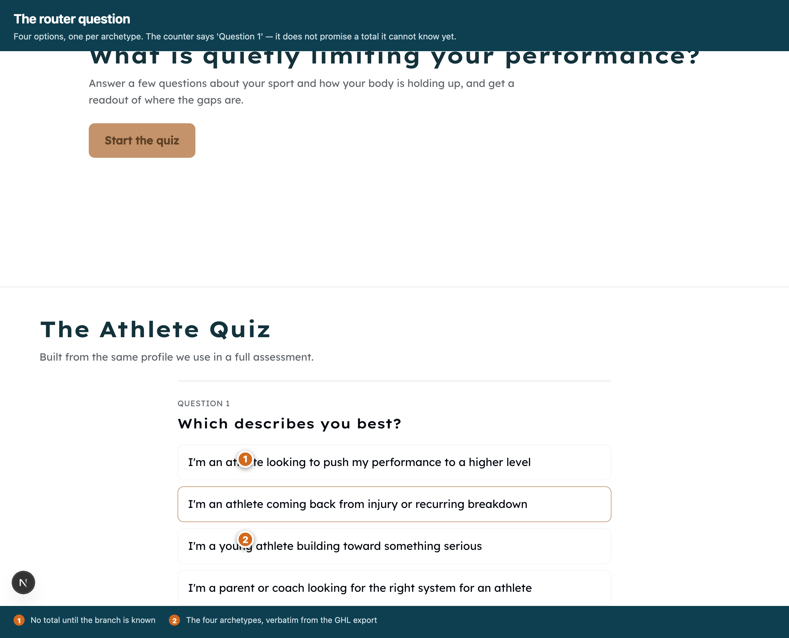
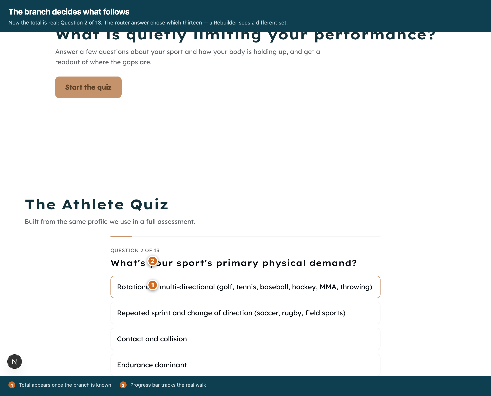
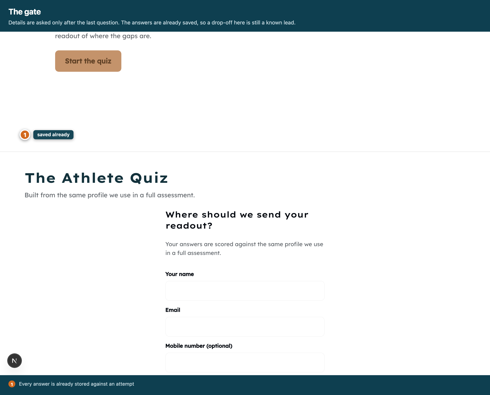
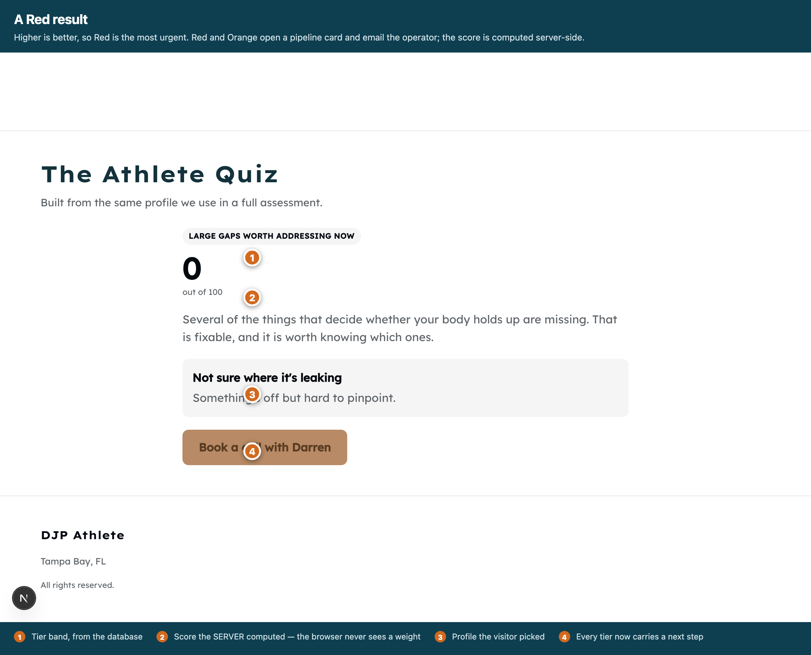
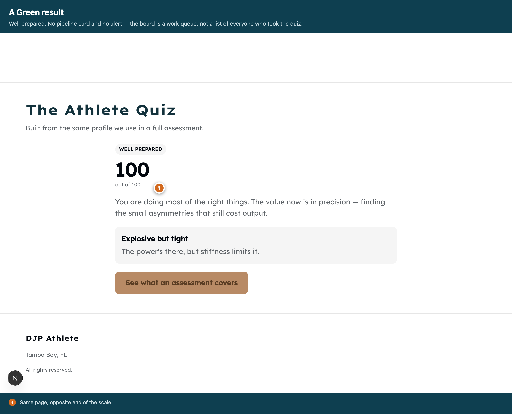
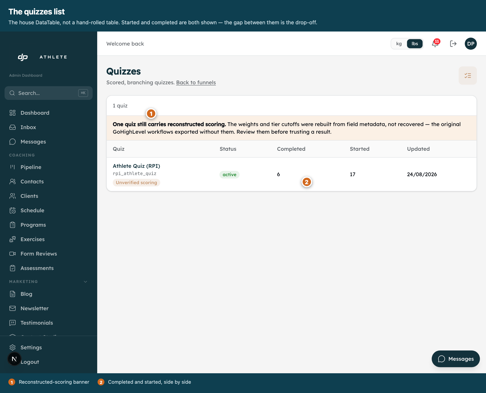
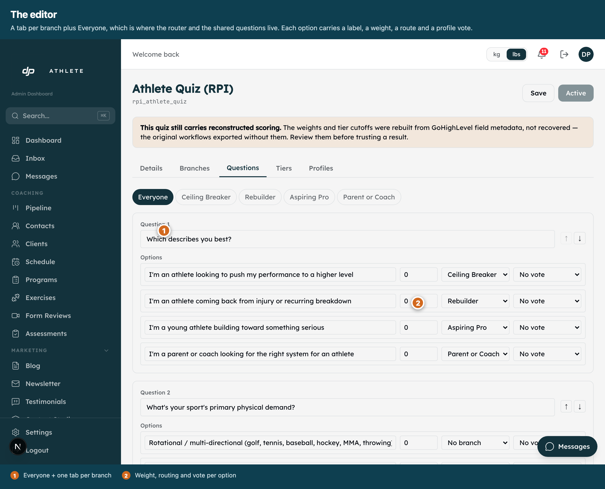
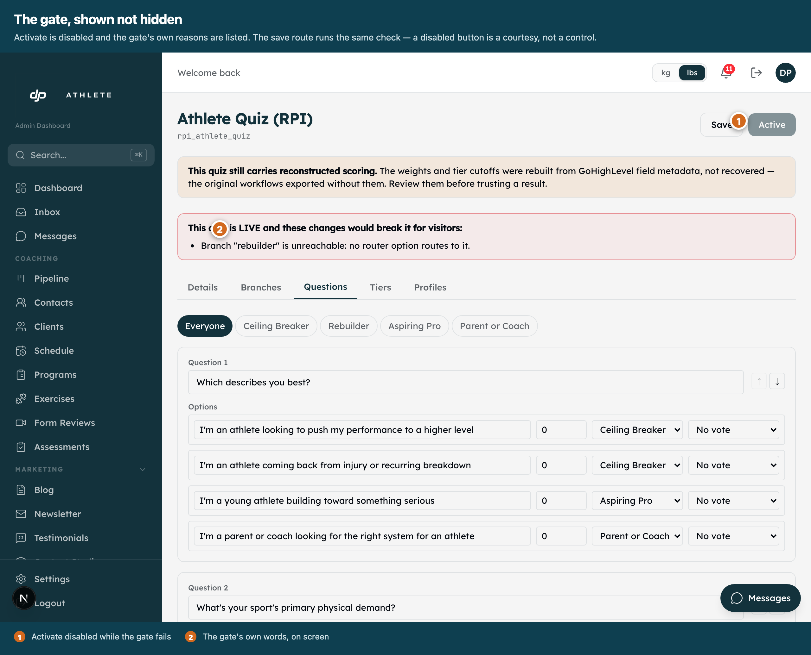

Athlete Quiz — nine screens
The Athlete Quiz — nine screens
Driven through the real app on the real routes: the published funnel at /go/athlete-quiz and the
admin at /admin/funnels/quizzes. Not a harness, not a storybook. Light only — this app has no
working dark mode.
Three defects these screenshots found, under a fully green suite
- The question counter promised a total it could not know. Before the router was answered the walk
was the six shared questions, so it read “Question 1 of 6”; one click later, “Question 2 of 13”. Every unit
test asserted which question was shown and none looked at the counter.
- A Red result had no call to action. The most urgent tier gave the athlete nowhere to go, because
the seed left
ctaLabel null on every tier.
- “Active” and “cannot be activated yet” appeared together. Editing a live quiz is deliberately
allowed — blocking it would make a broken one impossible to repair — so the wording now says the quiz is
LIVE and these changes would break it.

1 · The published funnelThe quiz is a block on a real page, with the funnel's own hero above and footer below.

2 · The routerFour archetypes, lifted verbatim from the GHL export. “Question 1” — no total is promised yet.

3 · The branch decides what followsNow the total is real: Question 2 of 13. A Rebuilder sees a different thirteen.

4 · The gateAsked only after the last question. Every answer is already saved, so a drop-off here is still a known lead.

5 · A Red resultHigher is better, so Red is the most urgent. Opens a pipeline card, emails the operator, and now offers a next step.

6 · A Green resultWell prepared. No card and no alert — the board is a work queue, not a list of everyone.

7 · The quizzes listThe house DataTable. Started and completed side by side; the gap is the drop-off.

8 · The editorA tab per branch plus Everyone. Label, weight, routing and profile vote per option.

9 · The gate, shown not hiddenActivate is disabled and the reasons are listed. The save route runs the same check.